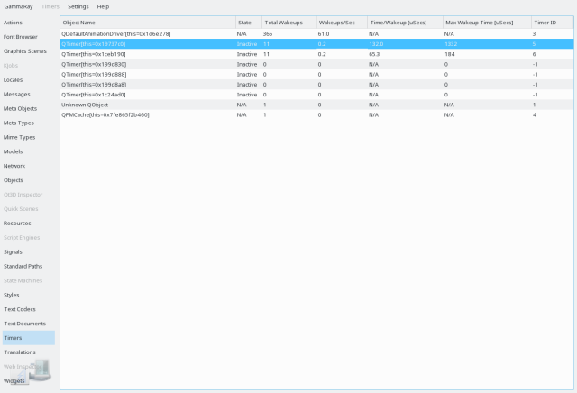

The timer view lists all active timers inside the target application, as well as their desired and actual firing intervals. This includes QTimer instances, but also any QObject that is receiving raw timer events (see QTimerEvent).
This tool is particularly useful for finding timers that fire too often and thus cause unnecessary system wakeup on energy constrained devices.

The list view shows the following information:
The context menu allows to navigate to different views for the timer objects.
The following examples make use of the timer view: